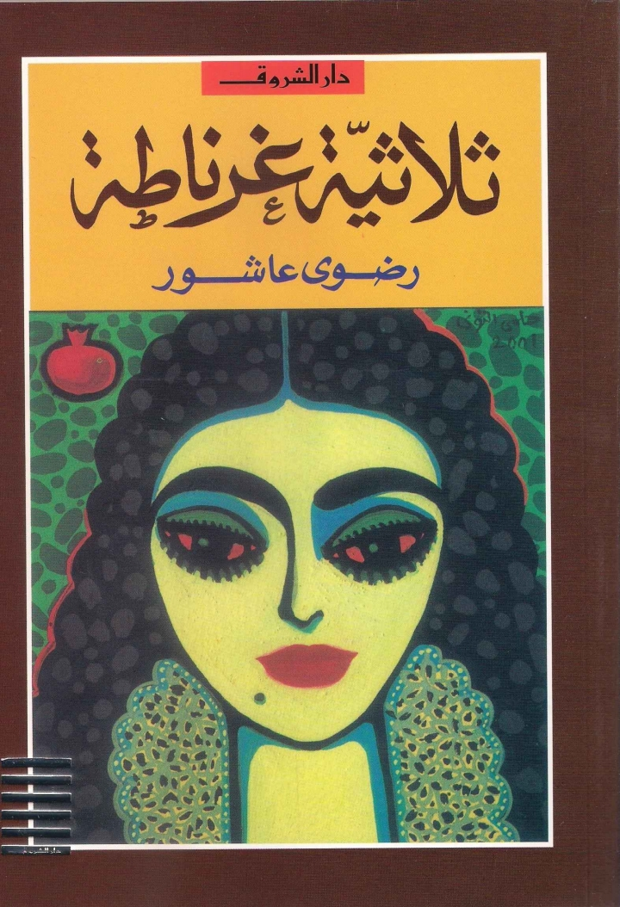

اسم الرواية :
ثلاثية غرناطةاسم المؤلف :
رضوى عاشورتصنيف الرواية :
مغامرة، غموض، رومانسية، ذكاءعدد الصفحات :
506تعريف بالرواية:-
ثلاثية غرناطة هي ثلاثية روائية تتكون من ثلاث روايات للكاتبة المصرية رضوى عاشور وهي على التوالي:
غرناطة
مريمة
الرحيل
و تدور الأحداث في مملكة غرناطة بعد سقوط جميع الممالك الإسلامية في الأندلس، وتبدأ أحداث الثلاثية في عام 1491 وهو العام الذي سقطت فيه غرناطة بإعلان المعاهدة التي تنازل بمقتضاها أبو عبد الله محمد الصغير آخر ملوك غرناطة عن ملكه لملكي قشتالة وأراجون وتنتهى بمخالفة آخر أبطالها الأحياء عليّ لقرار ترحيل المسلمين حينما يكتشف أن الموت في الرحيل عن الأندلس وليس في البقاء.
و قد صدرت عدة طبعات للثلاثية كانت الطبعة الأولى عن دار الهلال في جزئين عامي 1994 و1995